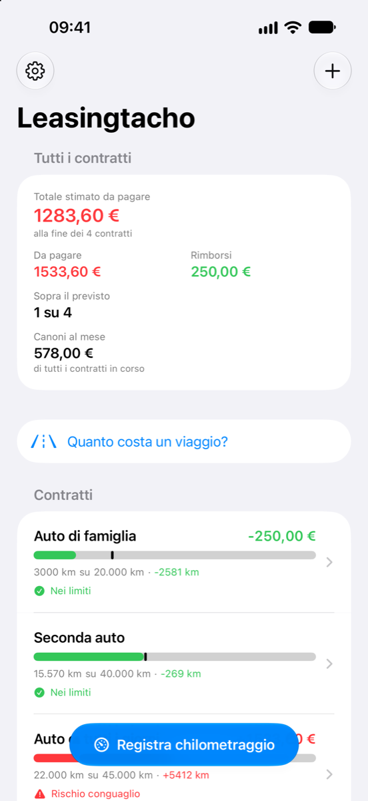
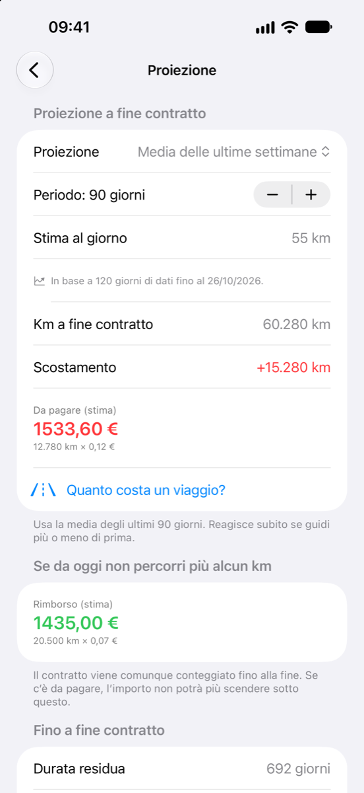
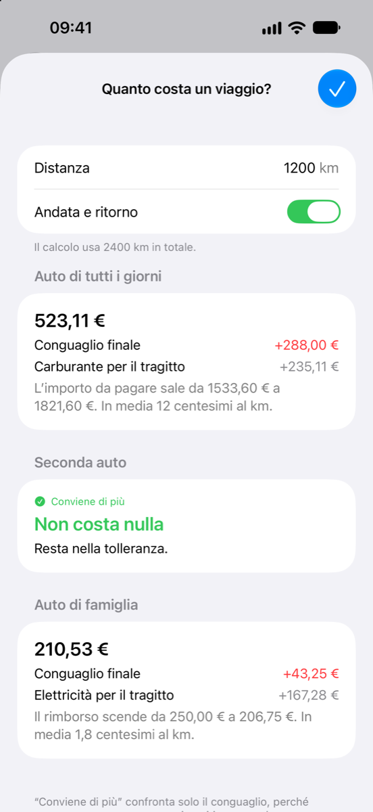
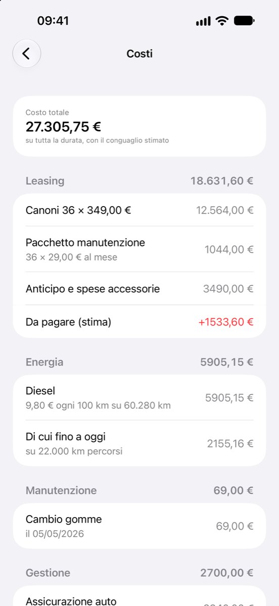
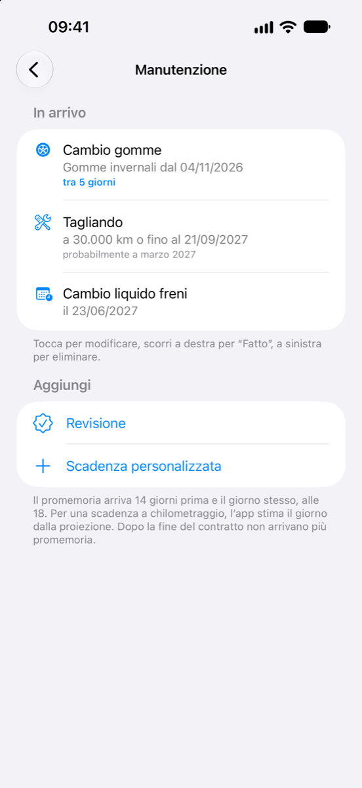
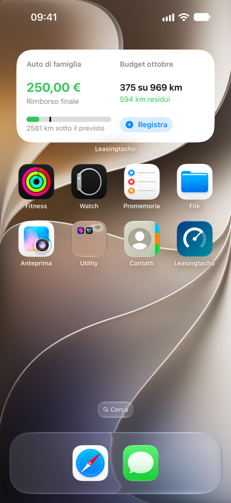
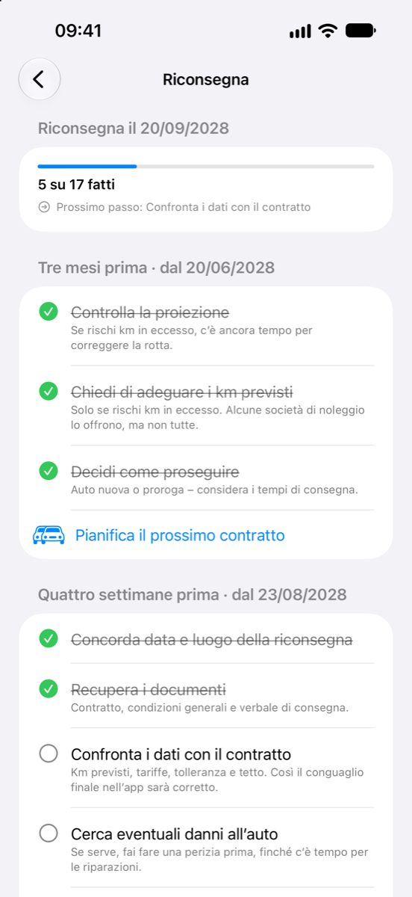
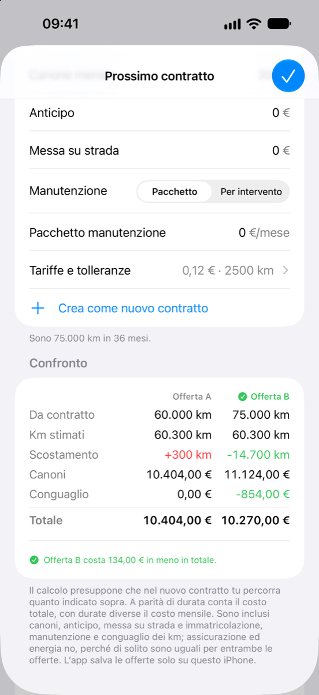
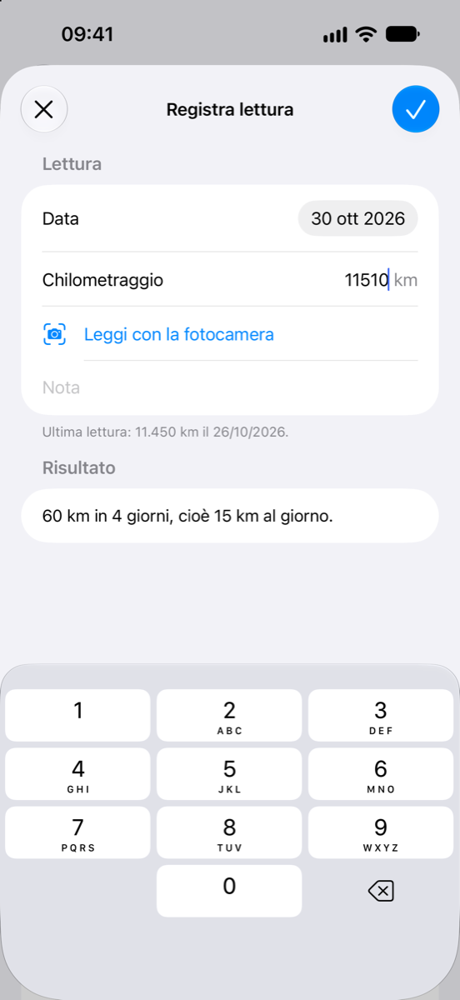
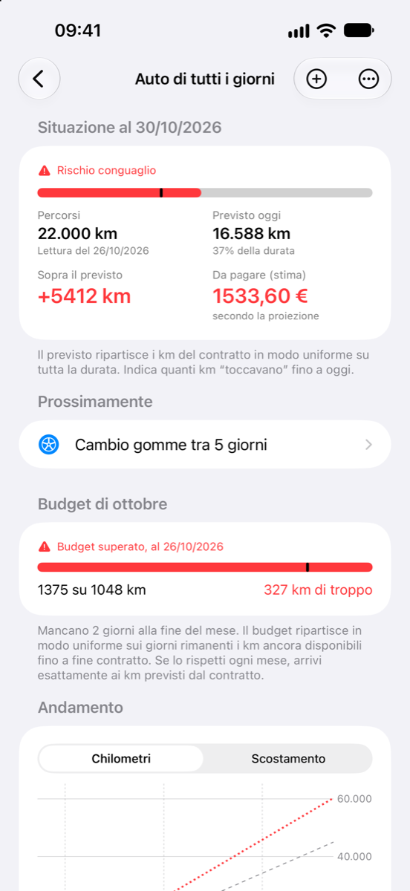

Cosa fa l’app
Nel noleggio a lungo termine (NLT) e in ogni leasing con un limite di chilometri, alla riconsegna arriva il conguaglio chilometrico: i km in eccesso si pagano, i km non percorsi a volte vengono rimborsati. Leasingtacho ti mostra già da ora come andrà a finire.
Analizzare
-
La tua situazione a colpo d’occhio
Quanti chilometri hai percorso, quanti ne sono previsti a oggi e cosa significa a fine contratto: un importo da pagare o un rimborso.
-
Proiezione fino a fine contratto
In base alla media delle ultime settimane, dall’inizio del contratto o secondo la tua stima annuale. E il calcolo nel caso in cui da oggi non si aggiunga più nessun chilometro.
-
Quanto costa questo viaggio?
Inserisci una distanza, per esempio quella delle vacanze, e scopri quanto costerà a fine contratto: più da pagare, meno rimborso o niente del tutto finché resta nella tolleranza – più l’elettricità o il carburante per il viaggio. Se hai più auto, l’app ti dice con quale conviene di più.
-
Budget del mese
Quanti chilometri puoi fare questo mese, quanti ne hai già percorsi e quanti ne restano – distribuiti in modo da arrivare esattamente ai km previsti dal contratto.
-
Quanto ti costa davvero l’auto?
Inserisci il canone, l’anticipo e la messa su strada, più l’assicurazione, un pacchetto manutenzione, incentivi o voci tue – al mese, all’anno o una tantum. Con consumo e prezzo, l’app calcola anche l’elettricità o il carburante fino a fine contratto. Somma il costo totale per l’intera durata, compreso l’importo da pagare o il rimborso previsto, diviso tra noleggio, energia, manutenzione e costi di gestione, al mese e per chilometro percorso. Il costo di un tagliando lo inserisci quando lo spunti come fatto. La schermata iniziale riunisce i canoni di tutte le tue auto.
-
Conguaglio chilometrico come nel tuo contratto
Tariffe al km per i km in eccesso e non percorsi, tolleranze e tetto al rimborso: li inserisci così come sono scritti nel contratto. Dopo la fine del contratto, l’app mostra il conguaglio finale.
-
Andamento e letture
Un grafico mostra i chilometri percorsi, il previsto e la proiezione per tutta la durata. Le letture sono ordinate per mese, con i chilometri percorsi ogni mese.
Registrare
-
Il chilometraggio con la fotocamera
Inquadra il contachilometri con la fotocamera e tocca il chilometraggio – oppure scegli una foto esistente; la lettura prende allora la data dello scatto. L’immagine viene analizzata solo sul tuo iPhone.
-
Con un tocco dalla schermata iniziale
«Registra il chilometraggio» si trova in fondo alla schermata iniziale dell’app. Per un contratto preciso basta scorrere la sua riga verso destra.
-
Siri e Comandi Rapidi
«Registra il chilometraggio» è disponibile per Siri, Spotlight e l’app Comandi Rapidi. Il chilometraggio viene salvato senza che tu debba aprire l’app. Il comando si trova anche nel menu dell’icona dell’app.
-
Promemoria
Per la prossima lettura, con la frequenza che preferisci, e se vuoi quattro settimane prima della fine del contratto.
-
Widget
La tua situazione nella schermata Home e nella schermata di blocco, senza aprire l’app. In più un controllo «Registra il chilometraggio» per il Centro di Controllo e il tasto Azione.
Gestire
-
Tutti i contratti che vuoi
Ogni contratto ha la sua pagina, e una panoramica riunisce tutti i tuoi contratti.
-
La manutenzione sotto controllo
Tagliando, cambio gomme, revisione e appuntamenti tuoi – a una data, a un chilometraggio o entrambi. Per un chilometraggio, l’app stima quando ci arriverai in base a come guidi e te lo ricorda due settimane prima. Dopo «Fatto», il prossimo appuntamento è già in programma.
-
Checklist per la riconsegna
Cosa fare tre mesi, quattro settimane e una settimana prima della riconsegna, il giorno stesso e dopo – con le date che derivano dalla fine del tuo contratto. Puoi aggiungere punti tuoi.
-
Pianifica il prossimo contratto
L’app mostra quanto guidi davvero in un anno e quale chilometraggio fa per te. Inserisci due offerte e scopri quale conviene alla fine: canoni, anticipo, messa su strada e manutenzione, più l’importo da pagare o il rimborso previsto. Con un tocco, l’offerta scelta diventa il tuo nuovo contratto.
-
Un contratto come modello
Il prossimo contratto riprende durata, tariffe, tolleranze e promemoria da quello precedente – inserisci solo ciò che è cambiato.
-
Sincronizzazione con iCloud
Contratti e letture sono salvati nel tuo iCloud privato e ti seguono così anche su un nuovo iPhone.
-
Blocco dell’app
Se vuoi, con Face ID, Touch ID o il codice del dispositivo. I widget nella schermata di blocco allora non mostrano più numeri.
-
Esportazione
Le letture in tabella (CSV) e la situazione di oggi come report – da condividere o da conservare.
-
Senza account, pubblicità né tracciamento
I tuoi dati restano con te. Lo sviluppatore dell’app non li vede. Per saperne di più, leggi l’informativa sulla privacy.
Prezzo
Prima provi, poi acquisti una volta sola.
- Nessun abbonamento
- Nessuna pubblicità
- 4,99 € una tantum
-
7 giorni di prova gratuita
Tutte le funzioni, senza limitazioni. La prova finisce da sola, senza alcun costo.
-
Poi 4,99 € una tantum
Un acquisto unico nell’app sblocca la versione completa – per sempre e su tutti i dispositivi collegati al tuo account Apple. In Svizzera costa CHF 5.00.
-
Senza acquisto
I tuoi contratti e le tue letture restano visibili ed esportabili. Puoi sempre consultare la checklist per la riconsegna, i costi e gli appuntamenti di manutenzione. Per registrare nuove letture o nuovi contratti, calcolare un viaggio, pianificare il prossimo contratto, spuntare la checklist e pianificare la manutenzione serve la versione completa.
Questo prezzo vale in Italia; negli altri paesi l’app ti indica l’importo locale prima dell’acquisto. Se hai già acquistato, recuperi la versione completa su un altro dispositivo nelle impostazioni dell’app, con «Ripristina acquisti».

Domande e risposte
Come funziona la prova?
Per 7 giorni puoi usare tutte le funzioni senza limitazioni. All’inizio della prova, l’app avvia un acquisto gratuito tramite l’App Store – non ti viene addebitato nulla e non parte alcun abbonamento.
Apple registra la data nel tuo account Apple. Per questo la prova vale allo stesso modo su tutti i tuoi dispositivi e non ricomincia dopo una reinstallazione.
Cosa succede alla fine della prova?
Niente che ti costi denaro. I tuoi contratti e le tue letture restano visibili e puoi sempre esportarli. Per registrare nuove letture o nuovi contratti, calcolare viaggi e pianificare il prossimo contratto ti serve la versione completa, un acquisto unico nell’app a 4,99 €.
Come recupero la versione completa su un nuovo iPhone?
L’acquisto vale su tutti i dispositivi collegati al tuo account Apple. Accedi sul nuovo dispositivo con lo stesso account Apple e tocca «Ripristina acquisti» nelle impostazioni dell’app. Non ti viene addebitato nulla.
Come arrivano i miei dati su un altro dispositivo?
Tramite iCloud. Se sui tuoi dispositivi hai effettuato l’accesso con lo stesso account Apple e iCloud è attivo per Leasingtacho, l’app sincronizza da sola contratti e letture – anche quando passi a un nuovo iPhone.
I dati restano nel tuo iCloud privato; lo sviluppatore dell’app non vi ha accesso. Senza iCloud restano solo sul dispositivo.
Come esporto i miei dati?
Apri un contratto e scorri fino alla sezione per la condivisione. Lì puoi creare un file CSV con tutte le letture, da aprire per esempio con Numbers o Excel, oppure un report di testo che riassume la situazione di oggi.
Dove inviare il file lo scegli tu nel menu di condivisione. Funziona anche dopo la prova, senza acquisto.
Come elimino i miei dati?
Per eliminare una lettura, scorrila verso sinistra nell’elenco. Un contratto con tutte le sue letture si elimina allo stesso modo nella schermata iniziale dell’app, oppure tenendo premuta la sua riga. Con iCloud scompare anche dagli altri tuoi dispositivi.
Per cancellare tutto, elimina l’app e la copia in iCloud: Impostazioni → il tuo nome → iCloud → Gestisci spazio → Leasingtacho.
La fotocamera riconosce sempre il chilometraggio giusto?
Non sempre – per questo l’app prende solo il numero che tocchi. Ignora per quanto possibile il contachilometri parziale, l’autonomia, l’ora e la temperatura. Controlla il valore prima di salvare; se serve, inseriscilo semplicemente con la tastiera.
Leasingtacho va bene per il mio noleggio a lungo termine?
Leasingtacho va bene per ogni contratto che prevede un limite di chilometri, come il noleggio a lungo termine (NLT). Inserisci i km previsti dal contratto, la tariffa al km per i km eccedenti e, se ci sono, la tolleranza e il rimborso dei km non percorsi, così come sono scritti nel tuo contratto.
Gli importi sono garantiti?
No. Leasingtacho calcola con i dati che riprendi dal tuo contratto e con le tue letture. Una proiezione è una stima basata sui chilometri che hai percorso finora. Altri costi della riconsegna, per esempio per danni, non sono considerati.
Tutte le informazioni sono fornite senza garanzia. Fa fede solo il conguaglio della tua società di noleggio.
Lo sviluppatore dell’app vede i miei dati?
No. L’app non invia alcun dato allo sviluppatore, e non ci sono né account né tracciamento. I dettagli sono nell’informativa sulla privacy.
Su quali dispositivi funziona Leasingtacho?
Su iPhone con iOS 18 o successivo.
Calcolatore e guida
Fare subito il conto o capire come si calcola il conguaglio chilometrico.
-
Calcolatore km per il noleggio a lungo termine
Inserisci i dati del contratto e il chilometraggio e scopri subito se sei sopra il previsto e quanto costa alla fine – direttamente nel browser.
-
Chilometri sotto controllo a fine anno
In cinque minuti scopri se sei sopra i km previsti e quanto rischi di pagare alla riconsegna – con esempio di calcolo e consigli per correggere.
Contatti
Una domanda, un problema o un’idea per la prossima versione? Scrivi a

In caso di problemi aiuta molto una breve descrizione di cosa hai fatto e di cosa è successo – se possibile con uno screenshot.